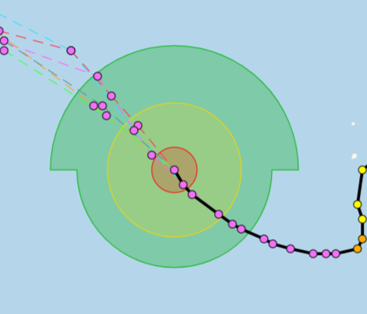
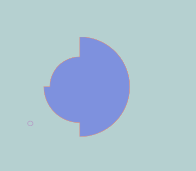
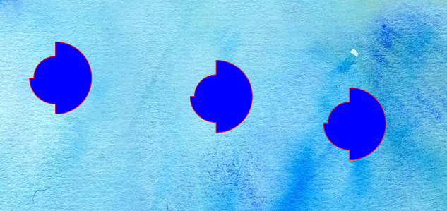

openlayers 从台风风圈绘制到canvas样式和图层的应用
条评论本文中所使用的数据来源于温州台风网，通过 F12 抓取，你可以在我的GitHub上查看数据和本文源代码
台风的风圈是一种不常见但算的上规则的图形，在上面的网站可以看到最终效果，简单的解剖下其实就是四个 1/4 圆

从数据结构上也可以看出来：
var radius_quad = { |
在某个固定经纬度点上，以此点为圆心组合成了一个所谓的风圈形状，四个方向分别代表每个 1/4 圆的半径。刚开始是为了实现这种效果进行了研究，后来发现 openlayers 对于这种效果的支持还挺有意思，记录下来已做分享。
通过自定义 geometry 的实现
最原始的思路也是最容易切入的点，就是去看 openlayers 中怎么实现圆形的画法，在 ol 中，有createRegularPolygon这个类，原理就是给定一些参数，用点去填充我们想要的形状，当填进去点达到一定密集度，自然就能得到一个近似的圆。
通过这个思路我们可以计算台风风圈的每个 1/4 圆的坐标，用点去占位，最终实现绘制出想要的图形。
具体代码可以去看某大牛的博客，这里只给出一个传送门，写的很详细了：
点我乘坐飞机 这个算法还有些不完善，就是在每个 1/4 圆结束时候少计算了一个点，导致看着有点不对劲
特点: 这种方式画出来的图形是一个图层中的一个 feature，好处自然不用多说，基本上 feature 支持的功能都能满足！
通过 canvas 类型的 symbol 实现
在点密集的情况下，用上面的方式其实效果已经很不错了，但是有些细（tiao）心（ci）的使用者，非要放大到一定程度，然后说你这个不够圆，那。。。。。
那我们就用 canvas 画出来，openlayers 中，要素的样式是有这么一种方式ol.style.Icon来实现，我们可以把绘制好的元素作为Icon的参数
var style = new ol.style.Style({ |
canvans 绘制的方法：
function createTyphoon(radius, radius_quad) { |
效果如下图：

特点： 这种方式，绘制出来的台风风圈其实只是一个 symbol 符号，需要把这个符号赋给一个具体的要素，比如一个点，一个圆之类的，而且根据分辨率还要去调整样式的缩放
map.getView().on("change:resolution", function () { |
通过 canvas 图层的方式实现
再后来转念一想，既然支持 canvas 的 symbol，为何不直接使用 canvas 绘制固定元素呢，果然在 API 中找到了ol.source.ImageCanvas，直接把 canvas 要素当作图层来使用！
ol.source.ImageCanvas的绘制有点需要特别注意的点，这里给出重要代码片段，完整 demo 可以去GitHub查看
创建图层，在 canvasFunction 中写具体的绘图方法
var canvasLayer = new ol.layer.Image({ |
canvasFunction 中一定要注意画布和地图的偏移处理，还要通过分辨率计算实际风圈大小
//计算画布和地图四至的偏移量 |
//在计算台风风圈的中心点时要补充计算偏移量 |
//利用canvasFunction提供的默认参数分辨率，计算准确的坐标 |
最终效果如下，我在同一图层中绘制了多个：

至于绘制 canvas 的方法和上面的 symbol 是一样的。具体代码还请移步GitHub(原谅我厚颜无耻的屡次打广告！)
特点：这种方式可以在一个图层中添加多个风圈要素，同时图层支持的功能也比较多，基本满足需求，效果也还行
这篇应用主要是从一个基本的需求所拓展开来的，canvas 图层的应用我想应该很强大，刚开始研究 openlyaers，相比于 arcgis，ol 很多功能可能要自己实现，但似乎效果上还是能让人满意的，欢迎大家讨论。